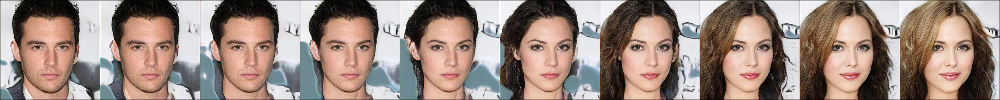
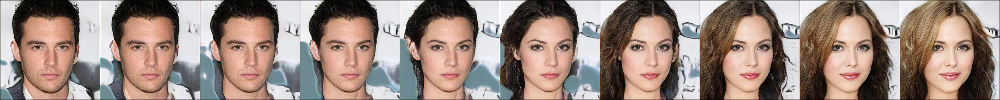

Divergence Triangle for Joint Training of Generator Model, Energy-based Model, and Inference Model
1 University of California, Los Angeles (UCLA), USA
2 College of Computer Science and Technology, Zhejiang University, China
Abstract
This paper proposes the divergence triangle as a framework for joint training of generator model, energy-based model and inference model. The divergence triangle is a compact and symmetric (anti-symmetric) objective function that seamlessly integrates variational learning, adversarial learning, wake-sleep algorithm, and contrastive divergence in a unified probabilistic formulation. This unification makes the processes of sampling, inference, energy evaluation readily available without the need for costly Markov chain Monte Carlo methods. Our experiments demonstrate that the divergence triangle is capable of learning (1) an energy-based model with well-formed energy landscape, (2) direct sampling in the form of a generator network, and (3) feed-forward inference that faithfully reconstructs observed as well as synthesized data. The divergence triangle is a robust training method that can learn from incomplete data.
Paper
The publication can be obtained here.
@article{han2018divergence,
title={Divergence Triangle for Joint Training of Generator Model, Energy-based Model, and Inference Model},
author={Han, Tian and Nijkamp, Erik and Fang, Xiaolin and Hill, Mitch and Zhu, Song-Chun and Wu, Ying Nian},
journal={arXiv preprint arXiv:1812.10907},
year={2018}
}
Code
The code can be obtained here.
Experiments
Experiment 1: Object Synthesis on Large-scale Dataset
For object categories, we test our model on two commonly-used datasets of natural images: CIFAR-10 and CelebA (Liu et al., 2015). For CelebA face dataset, we randomly select 9,000 images for training and another 1,000 images for testing in reconstruction task. The face images are resized to 64 × 64 and CIFAR-10 images remain 32 × 32. The qualitative results of generated samples for objects are shown in Figure 1.
Figure 1: Generated samples. Left: generated samples on CIFAR-10 dataset. Right: generated samples on CelebA dataset.
Experiment 2: Object Synthesis on Large-scale Dataset
We also train our model on large scale datasets including down-sampled 32 × 32 version of ImageNet (Oord et al., 2016), (Russakovsky et al., 2015), (roughly 1 million images) and Large-scale Scene Understand (LSUN) dataset (Yu et al., 2015). For the LSUN dataset, we consider the bedroom, tower and Church ourdoor categories which contains roughly 3 million, 0.7 million and 0.1 million images and were re-sized to 64 × 64. Generated samples are shown in Figure 2.
Figure 2: Generated samples. Left: 32 × 32 ImageNet. Right: 64 × 64 LSUN(bedroom).
Experiment 3: High-resolution Synthesis
For high-resolution synthesis, we recruit a layer-wise training scheme to learn models on CelebA-HQ (Karras et al., 2017) with resolutions of up to 1024 × 1024 pixels. Figure 3 depicts high-fidelity synthesis in a resolution of 1024 × 1024 pixels sampled from the generator model gθ(z) on CelebA-HQ. Figure 4 illustrates linear interpolation in latent space (i.e., (1− α) · z0 + α · z1), which indicates diversity in the samples.
Figure 3: Generated samples with 1024 × 1024 resolution drawn from gθ(z) with 512-dimensional latent vector z ∼ N(0,Id) for Celeba-HQ.
 

Figure 4: High-resolution synthesis from the generator model gθ(z) with linear interpolation in latent space (i.e., (1− α) · z0 + α · z1 for Celeba-HQ.
Acknowledgements
The work is supported by DARPA XAI project N66001-17-2-4029; ARO project W911NF1810296; and ONR MURI project N00014-16-1-2007; and XSEDE grant ASC170063. We thank Dr. Tianfu Wu, Shuai Zhu and Bo Pang for helpful discussions.